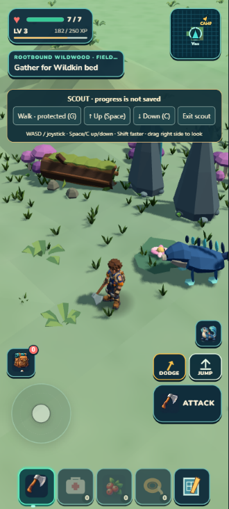
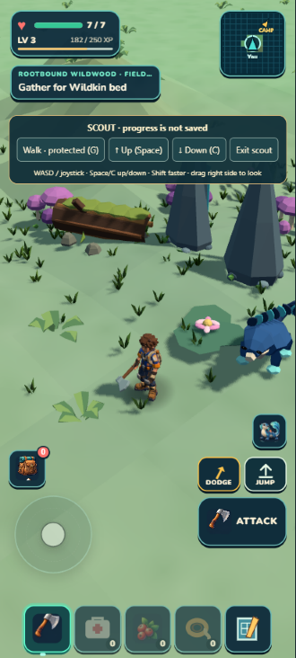
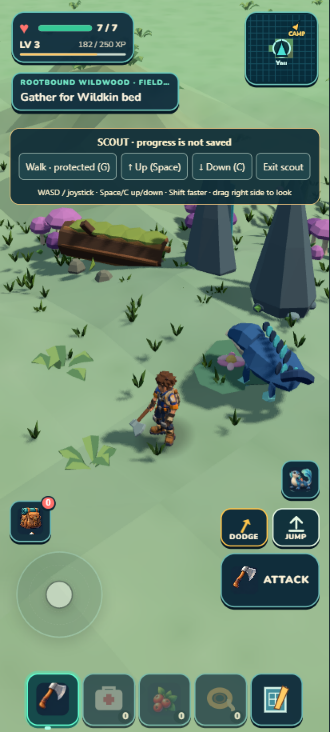

Baseline

Same portrait camera, existing 2m terrain grid and flat shading. The two previews alter only rendered ground. They are experiments, not implemented gameplay or collision changes. The moving companion is not part of the comparison.



The gentle version is hard to distinguish. The stronger version adds a faint diagonal plane, but neither supplies the reference’s rich folded ground. Preserve the experiment and develop a more deliberate combination of landform shape, triangulation and surface color. No runtime source was changed.
Independent visual review · Capture receipt · Actual camera · Reversible Scout preview